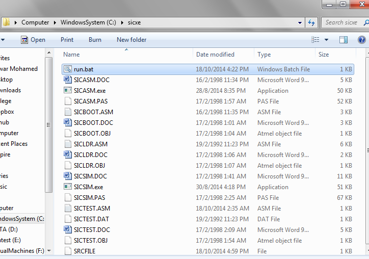
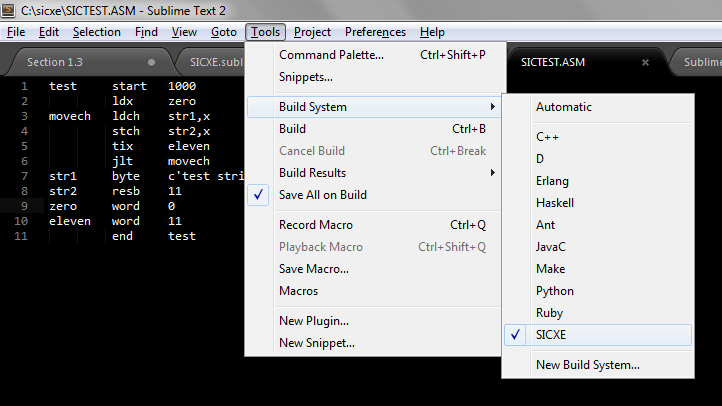
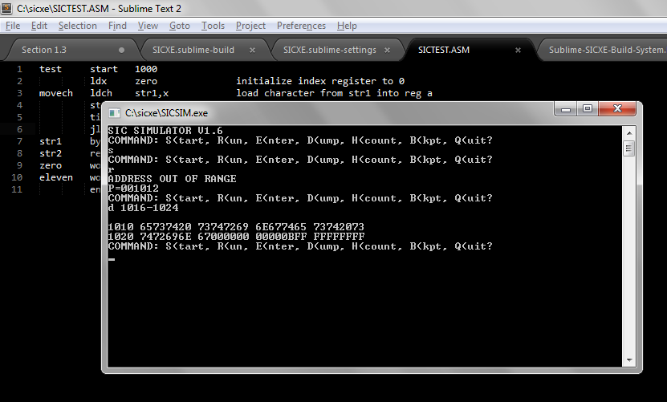

SIC/XE Build System for Sublime
by Anwar Mohamed - 18-10-2014Introduction to SIC/XE
SIC which stands for Simplified Instructional Computer is a hypothetical architecture that was used used by Leland Beck in his book 'System Software' to explain the concepts of assemblers, compilers and operating systems. SIC/XE, (the XE stands for Extra Equipment), is an extension of SIC which has higher memory, greater number of registers and additional instructions.
If you checked the assembler and the simulator you will suffer from the many file renames needed for your object file to run. So I have wrote a build system for sublime text to get the dirty work done for you.
Installing SIC/XE Build System
Download it from here
The archieve file is composed of:
./sicxe ./sicxe/run.bat ./sicxe/SICASM.DOC ./sicxe/SICASM.exe ./sicxe/SICASM.PAS ./sicxe/SICBOOT.ASM ./sicxe/SICBOOT.DOC ./sicxe/SICBOOT.OBJ ./sicxe/SICLDR.ASM ./sicxe/SICLDR.DOC ./sicxe/SICLDR.OBJ ./sicxe/SICSIM.DOC ./sicxe/SICSIM.exe ./sicxe/SICSIM.PAS ./sicxe/SICTEST.ASM ./sicxe/SICTEST.DAT ./sicxe/SICTEST.DOC ./sicxe/~$ICTEST.DOC ./SICXE.sublime-build ./SICXE.sublime-settings
You will have to copy these two files
SICXE.sublime-build SICXE.sublime-settings
To [ Just copy-paste into the address bar ]
%APPDATA%\Sublime Text 2\Packages\User\
Next you will have to copy sicxe folder into C:\

Open your assembly file using sublime text and choose SICXE build system from Tools

To assemble and simulate your object file just press Ctrl+B and guess what!? It worked !
